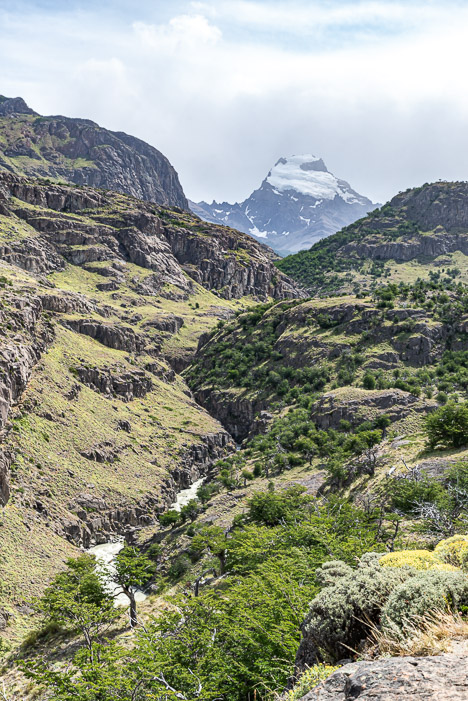
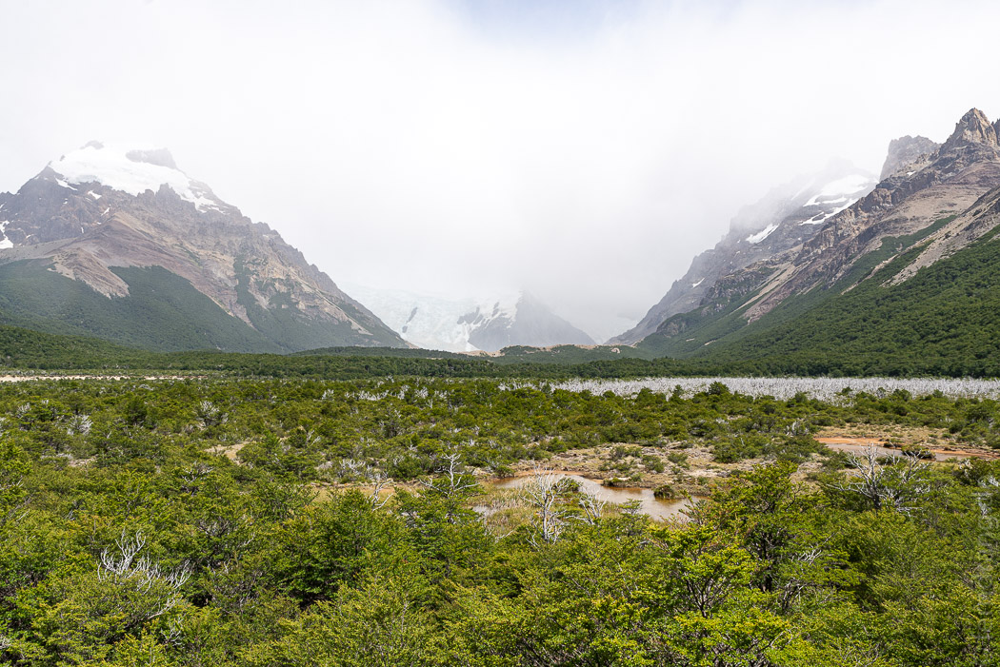

Der zweite Pflichtausflug von El Chalten ist die Wanderung zum Cerro Torre. Der Weg ist sehr einfach, da er nicht viel mehr als 250 Höhenmeter hat, auch wenn sich Hin- und Rückweg auf sechs Stunden ziehen. Die Wege sind wieder sehr schön und sehr voll. Die Landschaft ist wie am Vortag heidig, moorig und lieblich. Kein Wunder, es sind ja nur ein paar Kilometer weiter.
Obwohl Regen angesagt war, ist es heiter geblieben und ein leichter Regen fiel aus blauem Himmel. Nur über dem Berg war schlechtes Wetter. Eigentlich sollten wir die markanten Spitzen des Cerro Torre schon auf dem Weg sehen können. Doch da waren nur Wolken und Uneinigkeit, wo überhaupt der Berg sei.
Die letzten Meter ging es wieder zu einer Lagune hoch - das typisch Patagonische Setting - aber nicht die paar Meter waren das Problem, sondern der Wind. Wir sind in Schieflage vorwärts gekrochen. Immer wieder hatten wir in den letzten Tagen über den Wind gestaunt. Aber hier blies es am stärksten. Ein schwacher Trost für den unsichtbaren Berg, von dem es schon hieß, dass er selten sichtbar sei.
